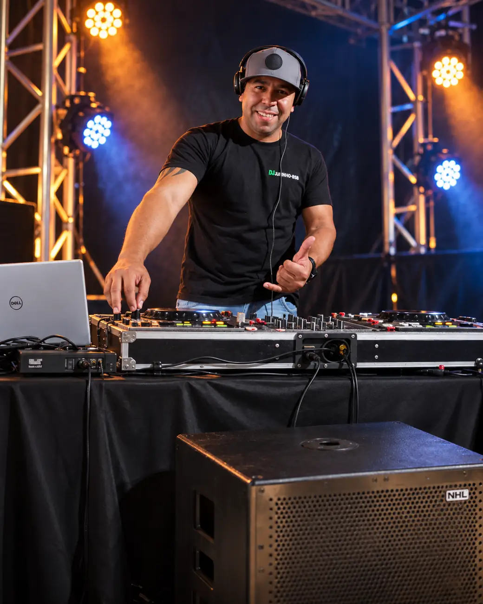
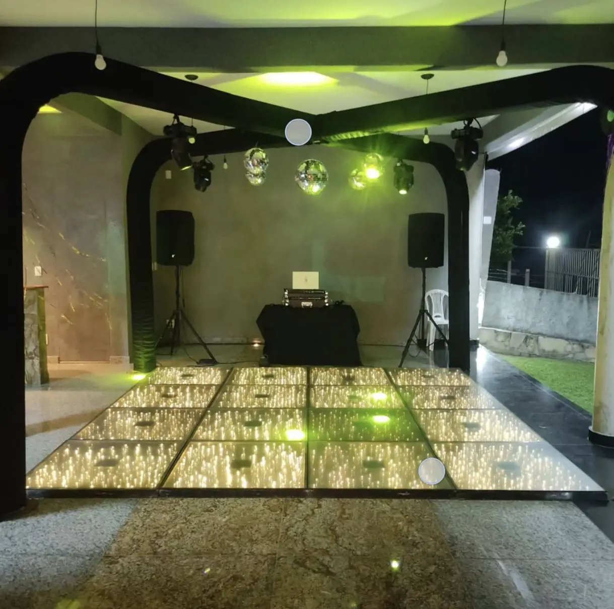
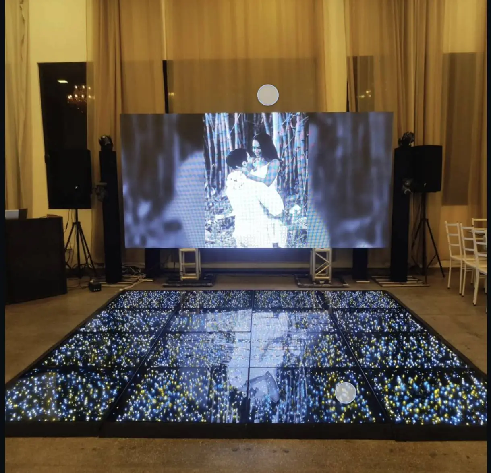
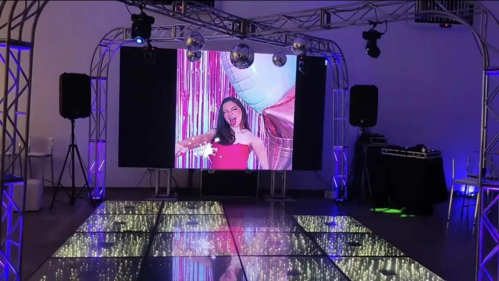
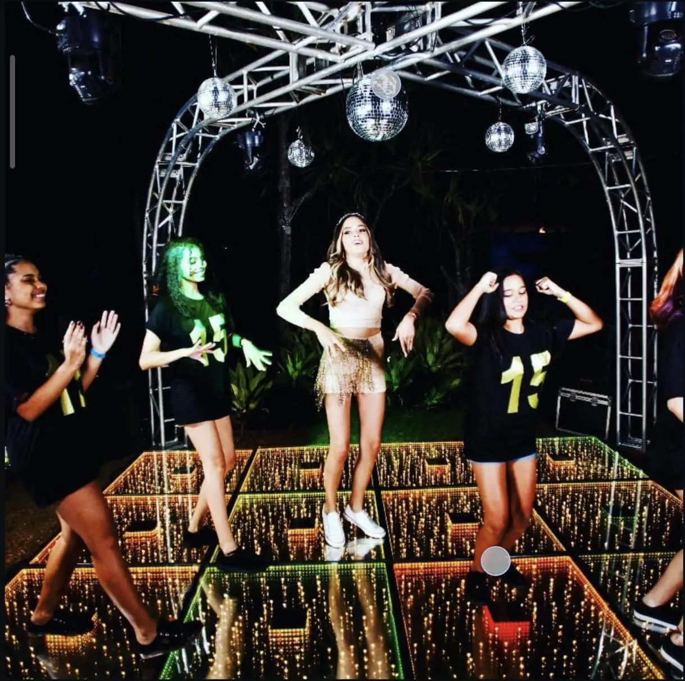

Aniversários & festas
Boa música para reunir pessoas e celebrar novas histórias.
Muito além da música: energia, conexão e a trilha sonora de momentos que merecem ser lembrados. Conheça a trajetória do DJ Juninho-BSB.
De Sobradinho para os palcos da vida

01 / Minha essência
O sonho de um garoto de Brasília que encontrou na música uma maneira de aproximar pessoas.
Cada evento tem sua própria energia. A música ajuda a contar essa história.
Marcos R. Junior, conhecido artisticamente como DJ Juninho-BSB, começou a tocar aos 13 anos, em festas de familiares e amigos. A curiosidade pelos equipamentos e o desejo de se tornar DJ abriram caminho para uma trajetória dedicada à música.
Natural de Brasília e morador de Sobradinho, aos 16 anos já se apresentava em aniversários, casamentos e diferentes celebrações. Sua experiência passou também por eventos realizados em embarcações conhecidas da capital.
Com conhecimentos em sonorização e iluminação e gosto musical eclético, Juninho busca entender a identidade de cada evento e adaptar seu repertório ao público presente.
Início da trajetória como DJ em festas de amigos e familiares.
Apresentações em aniversários, casamentos e eventos em Brasília.
Uma história movida pela conexão com as pessoas e por novos desafios.
02 / Experiências
Uma trajetória construída com diferentes públicos, ambientes e celebrações.
Boa música para reunir pessoas e celebrar novas histórias.
Atmosferas sonoras para momentos especiais e celebrações.
Repertório adaptado à proposta e ao perfil de cada ocasião.
Experiências que também fazem parte da sua história em Brasília.
03 / Portfólio em imagens
Registros reais de montagens, iluminação, pista e celebrações.




04 / Apresentação oficial
Um release artístico organizado para divulgação, apresentações e materiais de eventos.
Marcos R. Junior, conhecido artisticamente como DJ Juninho-BSB, iniciou sua trajetória musical aos 13 anos, tocando em festas de familiares e amigos. Movido pela curiosidade e por um sonho de se tornar DJ e se apresentar em grandes eventos, transformou as primeiras experiências em uma paixão que continua guiando seu caminho.
Natural de Brasília e morador de Sobradinho, aos 16 anos Juninho já acumulava apresentações em aniversários, casamentos e outras celebrações. Ao longo dessa trajetória, também participou de eventos em embarcações conhecidas da capital federal, ampliando seu contato com públicos e ambientes variados.
Com conhecimentos em sonorização e iluminação, além de um gosto musical eclético, DJ Juninho-BSB valoriza a versatilidade e a conexão com as pessoas. Sua proposta é compreender o estilo de cada evento, conhecer as expectativas dos anfitriões e criar um repertório que converse com os convidados.
Mais do que tocar músicas, sua missão é transformar momentos em lembranças inesquecíveis.
Para DJ Juninho-BSB, cada apresentação é uma oportunidade de compartilhar energia, celebrar histórias e fazer da música o elo entre pessoas e experiências.
05 / Conexão
Entre em contato pelo WhatsApp para conversar sobre seu evento, ou acompanhe DJ Juninho-BSB no Instagram.
@djjuninhobsb ↗WhatsApp: (61) 99201-9714 ↗